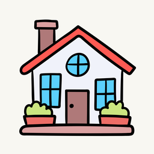
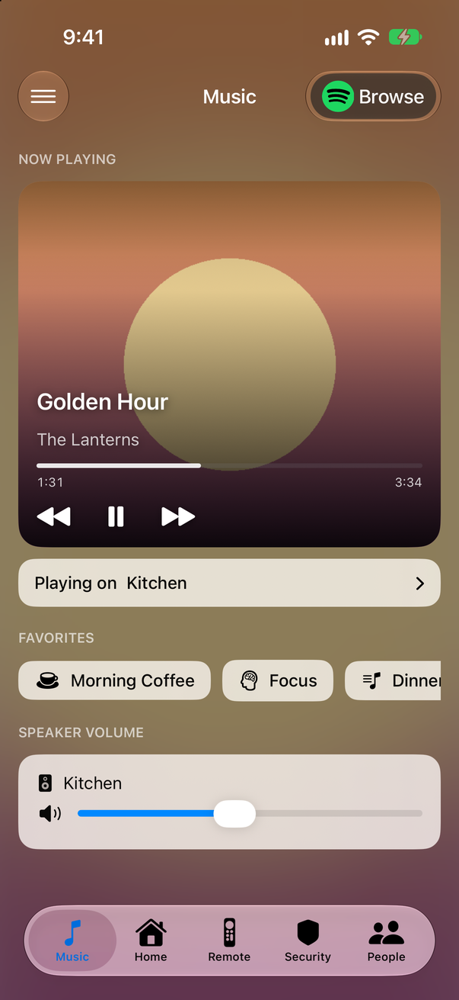
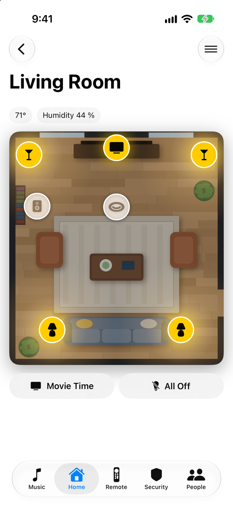
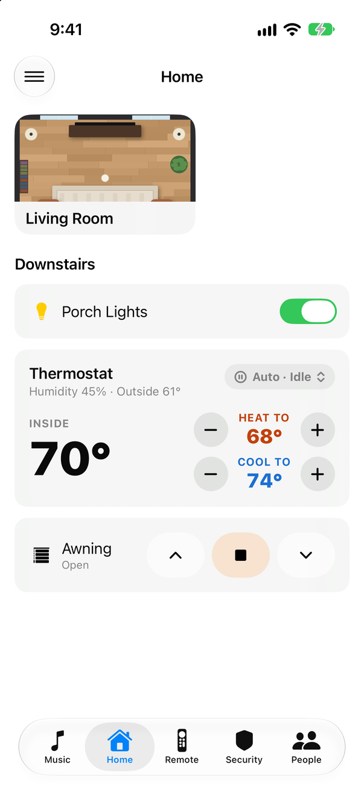
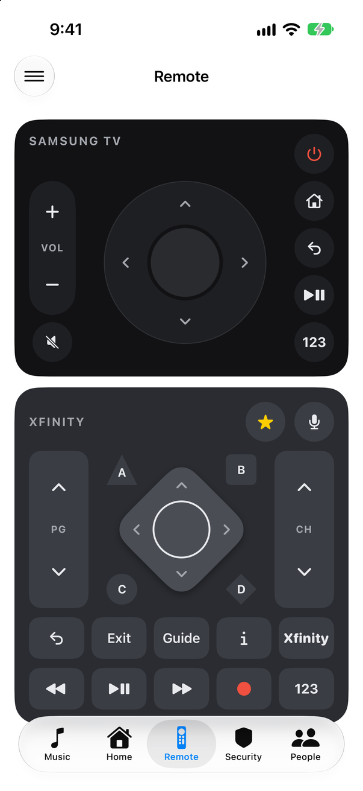
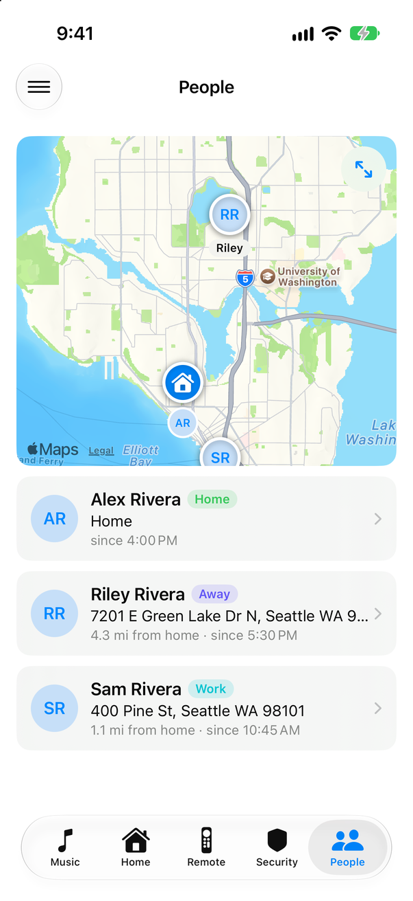
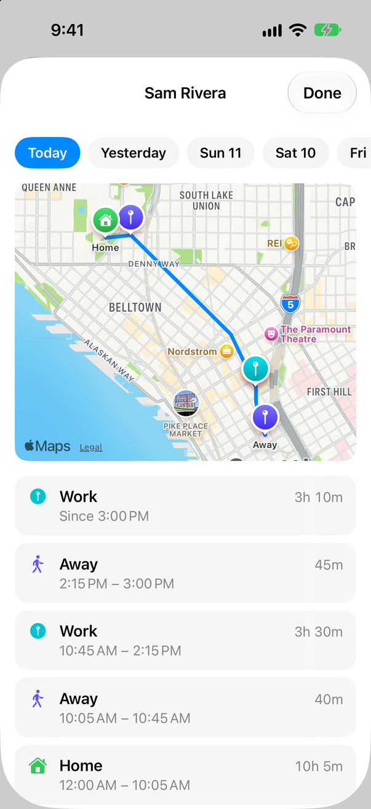
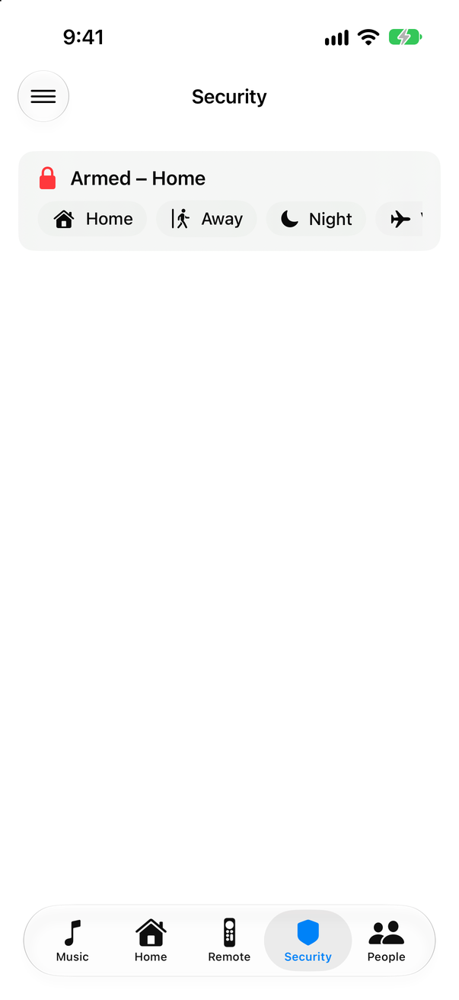

Hassonic
A native iPhone app for Home Assistant: your music, your rooms and your household, laid out in one YAML file.
Not on the App Store: you build it with Xcode and install it on your own iPhone.







What it does
Music in every room
What's playing, favorites and each speaker's volume, per streaming account. A Lock Screen Live Activity switches speakers without opening the app.
Rooms you can tap
A picture of the room with a button on each device. Lights glow where they're on; the oven and fridge show their temperature.
A real TV remote
Your TV and its cable box, side by side. Keys grey out while the TV is off.
Where everyone is
The household on one map, and each person's day: their path and the places they stayed.
Your layout, in YAML
Pages, cards, rooms and speakers come from one file on your Home Assistant. Edit it, pull down, done.
Nothing in between
The app talks straight to your Home Assistant over its WebSocket API. Tokens stay in the iOS Keychain.
Getting started
- Clone the repo and generate the Xcode project:
git clone https://github.com/JeffSteinbok/Hassonic-iOS.git cd Hassonic-iOS xcodegen generate
- Copy
Config/Local.xcconfig.exampletoConfig/Local.xcconfigand set your app ID prefix and Apple team. - Run it on your iPhone and sign in to your Home Assistant.
- Put a
hassonic.yamlin your Home Assistant'swwwfolder and pull down to load it.
The README walks through each step, and the configuration guide covers every card.